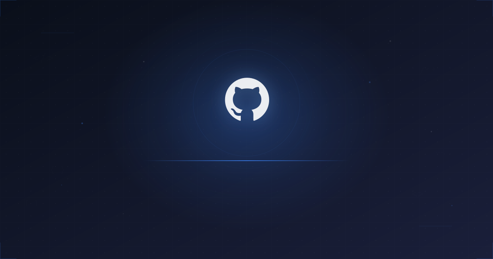

Analyses & ressources
Décryptages, études de cas et guides pratiques pour rester en avance sur les évolutions de Google et des IA génératives.

Un audit gratuit pour évaluer où vous en êtes — et ce que vous pouvez faire dès maintenant pour gagner en visibilité sur Google et dans les IA.